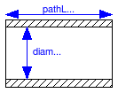

Modelica.Fluid.Pipes.BaseClasses.FlowModels.PartialStaggeredFlowModel
Modelica.Fluid.Pipes.BaseClasses.FlowModels.PartialStaggeredFlowModel
| Name | Description |
|---|---|
| PartialStaggeredFlowModel | Base class for momentum balances in flow models |
| NominalLaminarFlow | NominalLaminarFlow: Linear pressure loss for nominal values |
| PartialGenericPipeFlow | GenericPipeFlow: Pipe flow pressure loss and gravity with replaceable WallFriction package |
| NominalTurbulentPipeFlow | NominalTurbulentPipeFlow: Quadratic turbulent pressure loss for nominal values |
| TurbulentPipeFlow | TurbulentPipeFlow: Pipe wall friction in the quadratic turbulent regime (simple characteristic, mu not used) |
| DetailedPipeFlow | DetailedPipeFlow: Pipe wall friction in the laminar and turbulent regime (detailed characteristic) |
Modelica.Fluid.Pipes.BaseClasses.FlowModels.PartialStaggeredFlowModel
This paratial model defines a common interface for m=n-1 flow models between n device segments. The flow models provide a steady-state or dynamic momentum balance using an upwind discretization scheme per default. Extending models must add pressure loss terms for friction and gravity.
The fluid is specified in the interface with the thermodynamic states[n] for a given Medium model. The geometry is specified with the pathLengths[n-1] between the device segments as well as with the crossAreas[n] and the roughnesses[n] of the device segments. Moreover the fluid flow is characterized for different types of devices by the characteristic dimensions[n] and the average velocities vs[n] of fluid flow in the device segments. See Pipes.BaseClasses.CharacteristicNumbers.ReynoldsNumber for examplary definitions.
The parameter Re_turbulent can be specified for the least mass flow rate of the turbulent regime. It defaults to 4000, which is appropriate for pipe flow. The m_flows_turbulent[n-1] resulting from Re_turbulent can optionally be calculated together with the Reynolds numbers Res[n] of the device segments (show_Res=true).
Using the thermodynamic states[n] of the device segments, the densities rhos[n] and the dynamic viscosities mus[n] of the segments as well as the actual densities rhos_act[n-1] and the actual viscosities mus_act[n-1] of the flows are predefined in this base model. Note that no events are raised on flow reversal. This needs to be treated by an extending model, e.g. with numerical smoothing or by raising events as appropriate.
Extends from Modelica.Fluid.Interfaces.PartialDistributedFlow (Base class for a distributed momentum balance).
| Type | Name | Default | Description |
|---|---|---|---|
| Integer | m | n - 1 | Number of flow segments |
| ReynoldsNumber | Re_turbulent | 4000 | Start of turbulent regime, depending on type of flow device [1] |
| Advanced | |||
| Boolean | useUpstreamScheme | true | = false to average upstream and downstream properties across flow segments |
| Boolean | use_Ib_flows | momentumDynamics <> Types.Dy... | = true to consider differences in flow of momentum through boundaries |
| Diagnostics | |||
| Boolean | show_Res | false | = true, if Reynolds numbers are included for plotting |
| Internal Interface | |||
| Integer | n | 2 | Number of discrete flow volumes |
| Geometry | |||
| Real | nParallel | number of identical parallel flow devices | |
| Static head | |||
| Acceleration | g | system.g | Constant gravity acceleration [m/s2] |
| Assumptions | |||
| Boolean | allowFlowReversal | system.allowFlowReversal | = true to allow flow reversal, false restricts to design direction (states[1] -> states[n+1]) |
| Dynamics | momentumDynamics | system.momentumDynamics | Formulation of momentum balance |
| Initialization | |||
| MassFlowRate | m_flow_start | system.m_flow_start | Start value of mass flow rates [kg/s] |
| AbsolutePressure | p_a_start | Start value for p[1] at design inflow [Pa] | |
| AbsolutePressure | p_b_start | Start value for p[n+1] at design outflow [Pa] | |
partial model PartialStaggeredFlowModel
"Base class for momentum balances in flow models"
//
// Internal interface
// (not exposed to GUI; needs to be hard coded when using this model
//
replaceable package Medium =
Modelica.Media.Interfaces.PartialMedium "Medium in the component";
parameter Integer n=2 "Number of discrete flow volumes";
// Inputs
input Medium.ThermodynamicState[n] states
"Thermodynamic states along design flow";
input Modelica.SIunits.Velocity[n] vs "Mean velocities of fluid flow";
// Geometry parameters and inputs
parameter Real nParallel "number of identical parallel flow devices";
input SI.Area[n] crossAreas "Cross flow areas at segment boundaries";
input SI.Length[n] dimensions
"Characteristic dimensions for fluid flow (diameters for pipe flow)";
input SI.Height[n] roughnesses "Average height of surface asperities";
// Static head
input SI.Length[n-1] dheights "Height(states[2:n]) - Height(states[1:n-1])";
parameter SI.Acceleration g=system.g "Constant gravity acceleration";
// Assumptions
parameter Boolean allowFlowReversal=system.allowFlowReversal
"= true to allow flow reversal, false restricts to design direction (states[1] -> states[n+1])";
parameter Modelica.Fluid.Types.Dynamics momentumDynamics=system.momentumDynamics
"Formulation of momentum balance";
// Initialization
parameter Medium.MassFlowRate m_flow_start=system.m_flow_start
"Start value of mass flow rates";
parameter Medium.AbsolutePressure p_a_start
"Start value for p[1] at design inflow";
parameter Medium.AbsolutePressure p_b_start
"Start value for p[n+1] at design outflow";
//
// Implementation of momentum balance
//
extends Modelica.Fluid.Interfaces.PartialDistributedFlow(
final m = n-1);
// Advanced parameters
parameter Boolean useUpstreamScheme = true
"= false to average upstream and downstream properties across flow segments";
parameter Boolean use_Ib_flows = momentumDynamics <> Types.Dynamics.SteadyState
"= true to consider differences in flow of momentum through boundaries";
// Variables
SI.Density[n] rhos = if use_rho_nominal then fill(rho_nominal, n) else Medium.density(states);
SI.Density[n-1] rhos_act "Actual density per segment";
SI.DynamicViscosity[n] mus = if use_mu_nominal then fill(mu_nominal, n) else Medium.dynamicViscosity(states);
SI.DynamicViscosity[n-1] mus_act "Actual viscosity per segment";
// Variables
Modelica.SIunits.Pressure[n-1] dps_fg(each start = (p_a_start - p_b_start)/(n-1))
"pressure drop between states";
// Reynolds Number
parameter SI.ReynoldsNumber Re_turbulent = 4000
"Start of turbulent regime, depending on type of flow device";
parameter Boolean show_Res = false
"= true, if Reynolds numbers are included for plotting";
SI.ReynoldsNumber[n] Res=Modelica.Fluid.Pipes.BaseClasses.CharacteristicNumbers.ReynoldsNumber(
vs/nParallel,
rhos,
mus,
dimensions) if show_Res "Reynolds numbers";
Medium.MassFlowRate[n-1] m_flows_turbulent=
{nParallel*(Modelica.Constants.pi/4)*0.5*(dimensions[i] + dimensions[i+1])*mus_act[i]*Re_turbulent for i in 1:n-1} if
show_Res "Start of turbulent flow";
protected
parameter Boolean use_rho_nominal = false
"= true, if rho_nominal is used, otherwise computed from medium";
parameter SI.Density rho_nominal = Medium.density_pTX(Medium.p_default, Medium.T_default, Medium.X_default)
"Nominal density (e.g. rho_liquidWater = 995, rho_air = 1.2)";
parameter Boolean use_mu_nominal = false
"= true, if mu_nominal is used, otherwise computed from medium";
parameter SI.DynamicViscosity mu_nominal = Medium.dynamicViscosity(
Medium.setState_pTX(
Medium.p_default, Medium.T_default, Medium.X_default))
"Nominal dynamic viscosity (e.g. mu_liquidWater = 1e-3, mu_air = 1.8e-5)";
equation
if not allowFlowReversal then
rhos_act = rhos[1:n-1];
mus_act = mus[1:n-1];
elseif not useUpstreamScheme then
rhos_act = 0.5*(rhos[1:n-1] + rhos[2:n]);
mus_act = 0.5*(mus[1:n-1] + mus[2:n]);
else
for i in 1:n-1 loop
rhos_act[i] = noEvent(if m_flows[i] > 0 then rhos[i] else rhos[i+1]);
mus_act[i] = noEvent(if m_flows[i] > 0 then mus[i] else mus[i+1]);
end for;
end if;
if use_Ib_flows then
Ib_flows = {rhos[i]*vs[i]*vs[i]*crossAreas[i] - rhos[i+1]*vs[i+1]*vs[i+1]*crossAreas[i+1] for i in 1:n-1};
// alternatively use densities rhos_act of actual streams, together with mass flow rates,
// not conserving momentum if fluid density changes between flow segments:
//Ib_flows = {((rhos[i]*vs[i])^2*crossAreas[i] - (rhos[i+1]*vs[i+1])^2*crossAreas[i+1])/rhos_act[i] for i in 1:n-1};
else
Ib_flows = zeros(n-1);
end if;
Fs_p = {0.5*(crossAreas[i]+crossAreas[i+1])*(Medium.pressure(states[i+1])-Medium.pressure(states[i])) for i in 1:n-1};
// Note: the equation is written for dps_fg instead of Fs_fg to help the translator
dps_fg = {Fs_fg[i]*2/(crossAreas[i]+crossAreas[i+1]) for i in 1:n-1};
end PartialStaggeredFlowModel;
Modelica.Fluid.Pipes.BaseClasses.FlowModels.NominalLaminarFlow
This model defines a simple lineaer pressure loss assuming laminar flow for specified dp_nominal and m_flow_nominal.
Select show_Res = true to analyze the actual flow and the lengths of a pipe that would fulfill the specified nominal values for given geometry parameters crossAreas, dimensions and roughnesses.
Extends from Modelica.Fluid.Pipes.BaseClasses.FlowModels.PartialStaggeredFlowModel (Base class for momentum balances in flow models).
| Type | Name | Default | Description |
|---|---|---|---|
| ReynoldsNumber | Re_turbulent | 4000 | Start of turbulent regime, depending on type of flow device [1] |
| AbsolutePressure | dp_nominal | Nominal pressure loss [Pa] | |
| MassFlowRate | m_flow_nominal | Mass flow rate for dp_nominal [kg/s] | |
| Advanced | |||
| Boolean | useUpstreamScheme | true | = false to average upstream and downstream properties across flow segments |
| Boolean | use_Ib_flows | momentumDynamics <> Types.Dy... | = true to consider differences in flow of momentum through boundaries |
| Diagnostics | |||
| Boolean | show_Res | false | = true, if Reynolds numbers are included for plotting |
| Internal Interface | |||
| replaceable package Medium | PartialMedium | Medium in the component | |
| Integer | n | 2 | Number of discrete flow volumes |
| Geometry | |||
| Real | nParallel | number of identical parallel flow devices | |
| Static head | |||
| Acceleration | g | system.g | Constant gravity acceleration [m/s2] |
| Assumptions | |||
| Boolean | allowFlowReversal | system.allowFlowReversal | = true to allow flow reversal, false restricts to design direction (states[1] -> states[n+1]) |
| Dynamics | momentumDynamics | system.momentumDynamics | Formulation of momentum balance |
| Initialization | |||
| MassFlowRate | m_flow_start | system.m_flow_start | Start value of mass flow rates [kg/s] |
| AbsolutePressure | p_a_start | Start value for p[1] at design inflow [Pa] | |
| AbsolutePressure | p_b_start | Start value for p[n+1] at design outflow [Pa] | |
model NominalLaminarFlow
"NominalLaminarFlow: Linear pressure loss for nominal values"
extends Modelica.Fluid.Pipes.BaseClasses.FlowModels.PartialStaggeredFlowModel
(use_mu_nominal=not show_Res);
// Operational conditions
parameter SI.AbsolutePressure dp_nominal "Nominal pressure loss";
parameter SI.MassFlowRate m_flow_nominal "Mass flow rate for dp_nominal";
// Inverse parameterization assuming pipe flow and WallFriction.Laminar
// Laminar.massFlowRate_dp:
// m_flow = dp*pi*diameter^4*d/(128*length*mu);
SI.Length[n-1] pathLengths_nominal=
{(dp_nominal-g*dheights[i])*Modelica.Constants.pi*((dimensions[i]+dimensions[i+1])/2)^4*rhos_act[i]/(128*mus_act[i])/
(m_flow_nominal/nParallel) for i in 1:n-1} if show_Res;
equation
// linear pressure loss
if not allowFlowReversal or use_rho_nominal or not useUpstreamScheme then
dps_fg = {g*dheights[i]*rhos_act[i] for i in 1:n-1} + dp_nominal/m_flow_nominal*m_flows*nParallel;
else
dps_fg = {g*dheights[i]*(if m_flows[i] > 0 then rhos[i] else rhos[i+1]) for i in 1:n-1} + dp_nominal/m_flow_nominal*m_flows*nParallel;
end if;
end NominalLaminarFlow;
Modelica.Fluid.Pipes.BaseClasses.FlowModels.PartialGenericPipeFlow
This model describes pressure losses due to wall friction in a pipe and due to gravity. Correlations of different complexity and validity can be seleted via the replaceable package WallFriction (see parameter menu below). The details of the pipe wall friction model are described in the UsersGuide. Basically, different variants of the equation
dp = λ(Re,D)*(L/D)*ρ*v*|v|/2.
By default, the correlations are computed with media data at the actual time instant. In order to reduce non-linear equation systems, the parameters use_mu_nominal and use_rho_nominal provide the option to compute the correlations with constant media values at the desired operating point. This might speed-up the simulation and/or might give a more robust simulation.
Extends from Modelica.Fluid.Pipes.BaseClasses.FlowModels.PartialStaggeredFlowModel (Base class for momentum balances in flow models).
| Type | Name | Default | Description |
|---|---|---|---|
| ReynoldsNumber | Re_turbulent | 4000 | Start of turbulent regime, depending on type of flow device [1] |
| AbsolutePressure | dp_nominal | Nominal pressure loss (for nominal models) [Pa] | |
| MassFlowRate | m_flow_nominal | Mass flow rate for dp_nominal (for nominal models) [kg/s] | |
| Boolean | from_dp | momentumDynamics >= Types.Dy... | = true, use m_flow = f(dp), otherwise dp = f(m_flow) |
| AbsolutePressure | dp_small | system.dp_small | Within regularization if |dp| < dp_small (may be wider for large discontinuities in static head) [Pa] |
| MassFlowRate | m_flow_small | system.m_flow_small | Within regularization if |m_flows| < m_flow_small (may be wider for large discontinuities in static head) [kg/s] |
| Advanced | |||
| Boolean | useUpstreamScheme | true | = false to average upstream and downstream properties across flow segments |
| Boolean | use_Ib_flows | momentumDynamics <> Types.Dy... | = true to consider differences in flow of momentum through boundaries |
| Diagnostics | |||
| Boolean | show_Res | false | = true, if Reynolds numbers are included for plotting |
| Internal Interface | |||
| replaceable package Medium | PartialMedium | Medium in the component | |
| Integer | n | 2 | Number of discrete flow volumes |
| Geometry | |||
| Real | nParallel | number of identical parallel flow devices | |
| Static head | |||
| Acceleration | g | system.g | Constant gravity acceleration [m/s2] |
| Assumptions | |||
| Boolean | allowFlowReversal | system.allowFlowReversal | = true to allow flow reversal, false restricts to design direction (states[1] -> states[n+1]) |
| Dynamics | momentumDynamics | system.momentumDynamics | Formulation of momentum balance |
| Initialization | |||
| MassFlowRate | m_flow_start | system.m_flow_start | Start value of mass flow rates [kg/s] |
| AbsolutePressure | p_a_start | Start value for p[1] at design inflow [Pa] | |
| AbsolutePressure | p_b_start | Start value for p[n+1] at design outflow [Pa] | |
partial model PartialGenericPipeFlow
"GenericPipeFlow: Pipe flow pressure loss and gravity with replaceable WallFriction package"
extends Modelica.Fluid.Pipes.BaseClasses.FlowModels.PartialStaggeredFlowModel
(
final Re_turbulent=4000);
replaceable package WallFriction =
Modelica.Fluid.Pipes.BaseClasses.WallFriction.Detailed
constrainedby
Modelica.Fluid.Pipes.BaseClasses.WallFriction.PartialWallFriction
"Wall friction model";
input SI.Length[n-1] pathLengths_internal
"pathLengths used internally; to be defined by extending class";
// Parameters
parameter SI.AbsolutePressure dp_nominal
"Nominal pressure loss (for nominal models)";
parameter SI.MassFlowRate m_flow_nominal
"Mass flow rate for dp_nominal (for nominal models)";
parameter Boolean from_dp = momentumDynamics >= Types.Dynamics.SteadyStateInitial
" = true, use m_flow = f(dp), otherwise dp = f(m_flow)";
parameter SI.AbsolutePressure dp_small = system.dp_small
"Within regularization if |dp| < dp_small (may be wider for large discontinuities in static head)";
parameter SI.MassFlowRate m_flow_small = system.m_flow_small
"Within regularization if |m_flows| < m_flow_small (may be wider for large discontinuities in static head)";
final parameter Boolean constantPressureLossCoefficient=
use_rho_nominal and (use_mu_nominal or not WallFriction.use_mu)
"= true if the pressure loss does not depend on fluid states";
final parameter Boolean continuousFlowReversal=
(not useUpstreamScheme)
or constantPressureLossCoefficient
or not allowFlowReversal
"= true if the pressure loss is continuous around zero flow";
SI.Length[n-1] diameters = 0.5*(dimensions[1:n-1] + dimensions[2:n])
"mean diameters between segments";
equation
for i in 1:n-1 loop
assert(m_flows[i] > -m_flow_small or allowFlowReversal, "Reverting flow occurs even though allowFlowReversal is false");
end for;
if continuousFlowReversal then
// simple regularization
if from_dp and not WallFriction.dp_is_zero then
m_flows = WallFriction.massFlowRate_dp(
dps_fg - {g*dheights[i]*rhos_act[i] for i in 1:n-1},
rhos_act,
rhos_act,
mus_act,
mus_act,
pathLengths_internal,
diameters,
(roughnesses[1:n-1]+roughnesses[2:n])/2,
dp_small)*nParallel;
else
dps_fg = WallFriction.pressureLoss_m_flow(
m_flows/nParallel,
rhos_act,
rhos_act,
mus_act,
mus_act,
pathLengths_internal,
diameters,
(roughnesses[1:n-1]+roughnesses[2:n])/2,
m_flow_small/nParallel) + {g*dheights[i]*rhos_act[i] for i in 1:n-1};
end if;
else
// regularization for discontinuous flow reversal and static head
if from_dp and not WallFriction.dp_is_zero then
m_flows = WallFriction.massFlowRate_dp_staticHead(
dps_fg,
rhos[1:n-1],
rhos[2:n],
mus[1:n-1],
mus[2:n],
pathLengths_internal,
diameters,
g*dheights,
(roughnesses[1:n-1]+roughnesses[2:n])/2,
dp_small/n)*nParallel;
else
dps_fg = WallFriction.pressureLoss_m_flow_staticHead(
m_flows/nParallel,
rhos[1:n-1],
rhos[2:n],
mus[1:n-1],
mus[2:n],
pathLengths_internal,
diameters,
g*dheights,
(roughnesses[1:n-1]+roughnesses[2:n])/2,
m_flow_small/nParallel);
end if;
end if;
end PartialGenericPipeFlow;
Modelica.Fluid.Pipes.BaseClasses.FlowModels.NominalTurbulentPipeFlow

This model defines the pressure loss assuming turbulent flow for specified dp_nominal and m_flow_nominal. It takes into account the fluid density of each flow segment and obtaines appropriate pathLengths_nominal values for an inverse parameterization of the TurbulentPipeFlow model. Per default the upstream and downstream densities are averaged with the setting useUpstreamScheme = false, in order to avoid discontinuous pathLengths_nominal values in the case of flow reversal.
The geometry parameters crossAreas, diameters and roughnesses do not effect simulation results of this nominal pressure loss model. As the geometry is specified however, the optionally calculated Reynolds number as well as m_flows_turbulent and dps_fg_turbulent become meaningful and can be related to m_flow_small and dp_small.
Optional Variables if show_Res
| Type | Name | Description |
|---|---|---|
| ReynoldsNumber | Res[n] | Reynolds numbers of pipe flow per flow segment |
| MassFlowRate | m_flows_turbulent[n-1] | mass flow rates at start of turbulent region for Re_turbulent=4000 |
| AbsolutePressure | dps_fg_turbulent[n-1] | pressure losses due to friction and gravity corresponding to m_flows_turbulent |
| Type | Name | Default | Description |
|---|---|---|---|
| Length | pathLengths_internal[n - 1] | pathLengths_nominal | pathLengths used internally; to be defined by extending class [m] |
| AbsolutePressure | dp_nominal | Nominal pressure loss (for nominal models) [Pa] | |
| MassFlowRate | m_flow_nominal | Mass flow rate for dp_nominal (for nominal models) [kg/s] | |
| Boolean | from_dp | momentumDynamics >= Types.Dy... | = true, use m_flow = f(dp), otherwise dp = f(m_flow) |
| AbsolutePressure | dp_small | system.dp_small | Within regularization if |dp| < dp_small (may be wider for large discontinuities in static head) [Pa] |
| MassFlowRate | m_flow_small | system.m_flow_small | Within regularization if |m_flows| < m_flow_small (may be wider for large discontinuities in static head) [kg/s] |
| Advanced | |||
| Boolean | useUpstreamScheme | false | = false to average upstream and downstream properties across flow segments |
| Boolean | use_Ib_flows | momentumDynamics <> Types.Dy... | = true to consider differences in flow of momentum through boundaries |
| Diagnostics | |||
| Boolean | show_Res | false | = true, if Reynolds numbers are included for plotting |
| Wall friction | |||
| replaceable package WallFriction | Detailed | Wall friction model | |
| Internal Interface | |||
| replaceable package Medium | PartialMedium | Medium in the component | |
| Integer | n | 2 | Number of discrete flow volumes |
| Geometry | |||
| Real | nParallel | number of identical parallel flow devices | |
| Static head | |||
| Acceleration | g | system.g | Constant gravity acceleration [m/s2] |
| Assumptions | |||
| Boolean | allowFlowReversal | system.allowFlowReversal | = true to allow flow reversal, false restricts to design direction (states[1] -> states[n+1]) |
| Dynamics | momentumDynamics | system.momentumDynamics | Formulation of momentum balance |
| Initialization | |||
| MassFlowRate | m_flow_start | system.m_flow_start | Start value of mass flow rates [kg/s] |
| AbsolutePressure | p_a_start | Start value for p[1] at design inflow [Pa] | |
| AbsolutePressure | p_b_start | Start value for p[n+1] at design outflow [Pa] | |
| Type | Name | Description |
|---|---|---|
| Wall friction | ||
| replaceable package WallFriction | Wall friction model | |
model NominalTurbulentPipeFlow
"NominalTurbulentPipeFlow: Quadratic turbulent pressure loss for nominal values"
extends Modelica.Fluid.Pipes.BaseClasses.FlowModels.PartialGenericPipeFlow(
redeclare package WallFriction =
Modelica.Fluid.Pipes.BaseClasses.WallFriction.QuadraticTurbulent,
use_mu_nominal=not show_Res,
pathLengths_internal=pathLengths_nominal,
useUpstreamScheme=false);
import Modelica.Constants.pi;
// variables for nominal pressure loss
SI.Length[n-1] pathLengths_nominal
"pathLengths resulting from nominal pressure loss and geometry";
Real[n-1] ks_inv "coefficient for quadratic flow";
Real[n-1] zetas "coefficient for quadratic flow";
// Reynolds Number
Medium.AbsolutePressure[n-1] dps_fg_turbulent=
{(mus_act[i]*diameters[i]*pi/4)^2*Re_turbulent^2/(ks_inv[i]*rhos_act[i]) for i in 1:n-1} if
show_Res "Start of turbulent flow";
equation
// Inverse parameterization for WallFriction.QuadraticTurbulent
// Note: the code should be shared with the WallFriction.QuadraticTurbulent model,
// but this required a re-design of the WallFriction interfaces ...
// zeta = (length_nominal/diameter)/(2*Math.log10(3.7 /(roughness/diameter)))^2;
// k_inv = (pi*diameter*diameter)^2/(8*zeta);
// k = rho*k_inv "Factor in m_flow = sqrt(k*dp)";
for i in 1:n-1 loop
ks_inv[i] = (m_flow_nominal/nParallel)^2/((dp_nominal-g*dheights[i]*rhos_act[i]))/rhos_act[i];
zetas[i] = (pi*diameters[i]*diameters[i])^2/(8*ks_inv[i]);
pathLengths_nominal[i] =
zetas[i]*diameters[i]*(2*Modelica.Math.log10(3.7 /((roughnesses[i]+roughnesses[i+1])/2/diameters[i])))^2;
end for;
end NominalTurbulentPipeFlow;
Modelica.Fluid.Pipes.BaseClasses.FlowModels.TurbulentPipeFlow
This model defines only the quadratic turbulent regime of wall friction: dp = k*m_flow*|m_flow|, where "k" depends on density and the roughness of the pipe and is not a function of the Reynolds number. This relationship is only valid for large Reynolds numbers. The turbulent pressure loss correlation might be useful to optimize models that are only facing turbular flow.
Extends from Modelica.Fluid.Pipes.BaseClasses.FlowModels.PartialGenericPipeFlow (GenericPipeFlow: Pipe flow pressure loss and gravity with replaceable WallFriction package).
| Type | Name | Default | Description |
|---|---|---|---|
| Length | pathLengths_internal[n - 1] | pathLengths | pathLengths used internally; to be defined by extending class [m] |
| AbsolutePressure | dp_nominal | 1e3*dp_small | Nominal pressure loss (for nominal models) [Pa] |
| MassFlowRate | m_flow_nominal | 1e2*m_flow_small | Mass flow rate for dp_nominal (for nominal models) [kg/s] |
| Boolean | from_dp | momentumDynamics >= Types.Dy... | = true, use m_flow = f(dp), otherwise dp = f(m_flow) |
| AbsolutePressure | dp_small | system.dp_small | Within regularization if |dp| < dp_small (may be wider for large discontinuities in static head) [Pa] |
| MassFlowRate | m_flow_small | system.m_flow_small | Within regularization if |m_flows| < m_flow_small (may be wider for large discontinuities in static head) [kg/s] |
| Advanced | |||
| Boolean | useUpstreamScheme | true | = false to average upstream and downstream properties across flow segments |
| Boolean | use_Ib_flows | momentumDynamics <> Types.Dy... | = true to consider differences in flow of momentum through boundaries |
| Diagnostics | |||
| Boolean | show_Res | false | = true, if Reynolds numbers are included for plotting |
| Wall friction | |||
| replaceable package WallFriction | Detailed | Wall friction model | |
| Internal Interface | |||
| replaceable package Medium | PartialMedium | Medium in the component | |
| Integer | n | 2 | Number of discrete flow volumes |
| Geometry | |||
| Real | nParallel | number of identical parallel flow devices | |
| Static head | |||
| Acceleration | g | system.g | Constant gravity acceleration [m/s2] |
| Assumptions | |||
| Boolean | allowFlowReversal | system.allowFlowReversal | = true to allow flow reversal, false restricts to design direction (states[1] -> states[n+1]) |
| Dynamics | momentumDynamics | system.momentumDynamics | Formulation of momentum balance |
| Initialization | |||
| MassFlowRate | m_flow_start | system.m_flow_start | Start value of mass flow rates [kg/s] |
| AbsolutePressure | p_a_start | Start value for p[1] at design inflow [Pa] | |
| AbsolutePressure | p_b_start | Start value for p[n+1] at design outflow [Pa] | |
| Type | Name | Description |
|---|---|---|
| Wall friction | ||
| replaceable package WallFriction | Wall friction model | |
model TurbulentPipeFlow
"TurbulentPipeFlow: Pipe wall friction in the quadratic turbulent regime (simple characteristic, mu not used)"
extends Modelica.Fluid.Pipes.BaseClasses.FlowModels.PartialGenericPipeFlow(
redeclare package WallFriction =
Modelica.Fluid.Pipes.BaseClasses.WallFriction.QuadraticTurbulent,
use_mu_nominal=not show_Res,
pathLengths_internal=pathLengths,
dp_nominal=1e3*dp_small,
m_flow_nominal=1e2*m_flow_small);
end TurbulentPipeFlow;
Modelica.Fluid.Pipes.BaseClasses.FlowModels.DetailedPipeFlow

This component defines the complete regime of wall friction. The details are described in the UsersGuide. The functional relationship of the friction loss factor λ is displayed in the next figure. Function massFlowRate_dp() defines the "red curve" ("Swamee and Jain"), where as function pressureLoss_m_flow() defines the "blue curve" ("Colebrook-White"). The two functions are inverses from each other and give slightly different results in the transition region between Re = 1500 .. 4000, in order to get explicit equations without solving a non-linear equation.

Additionally to wall friction, this component properly implements static head. With respect to the latter, two cases can be distinguished. In the case shown next, the change of elevation with the path from a to b has the opposite sign of the change of density.

In the case illustrated second, the change of elevation with the path from a to b has the same sign of the change of density.
 Extends from Modelica.Fluid.Pipes.BaseClasses.FlowModels.PartialGenericPipeFlow (GenericPipeFlow: Pipe flow pressure loss and gravity with replaceable WallFriction package).
Extends from Modelica.Fluid.Pipes.BaseClasses.FlowModels.PartialGenericPipeFlow (GenericPipeFlow: Pipe flow pressure loss and gravity with replaceable WallFriction package).
| Type | Name | Default | Description |
|---|---|---|---|
| Length | pathLengths_internal[n - 1] | pathLengths | pathLengths used internally; to be defined by extending class [m] |
| AbsolutePressure | dp_nominal | 1e3*dp_small | Nominal pressure loss (for nominal models) [Pa] |
| MassFlowRate | m_flow_nominal | 1e2*m_flow_small | Mass flow rate for dp_nominal (for nominal models) [kg/s] |
| Boolean | from_dp | momentumDynamics >= Types.Dy... | = true, use m_flow = f(dp), otherwise dp = f(m_flow) |
| AbsolutePressure | dp_small | system.dp_small | Within regularization if |dp| < dp_small (may be wider for large discontinuities in static head) [Pa] |
| MassFlowRate | m_flow_small | system.m_flow_small | Within regularization if |m_flows| < m_flow_small (may be wider for large discontinuities in static head) [kg/s] |
| Advanced | |||
| Boolean | useUpstreamScheme | true | = false to average upstream and downstream properties across flow segments |
| Boolean | use_Ib_flows | momentumDynamics <> Types.Dy... | = true to consider differences in flow of momentum through boundaries |
| Diagnostics | |||
| Boolean | show_Res | false | = true, if Reynolds numbers are included for plotting |
| Wall friction | |||
| replaceable package WallFriction | Detailed | Wall friction model | |
| Internal Interface | |||
| replaceable package Medium | PartialMedium | Medium in the component | |
| Integer | n | 2 | Number of discrete flow volumes |
| Geometry | |||
| Real | nParallel | number of identical parallel flow devices | |
| Static head | |||
| Acceleration | g | system.g | Constant gravity acceleration [m/s2] |
| Assumptions | |||
| Boolean | allowFlowReversal | system.allowFlowReversal | = true to allow flow reversal, false restricts to design direction (states[1] -> states[n+1]) |
| Dynamics | momentumDynamics | system.momentumDynamics | Formulation of momentum balance |
| Initialization | |||
| MassFlowRate | m_flow_start | system.m_flow_start | Start value of mass flow rates [kg/s] |
| AbsolutePressure | p_a_start | Start value for p[1] at design inflow [Pa] | |
| AbsolutePressure | p_b_start | Start value for p[n+1] at design outflow [Pa] | |
| Type | Name | Description |
|---|---|---|
| Wall friction | ||
| replaceable package WallFriction | Wall friction model | |
model DetailedPipeFlow
"DetailedPipeFlow: Pipe wall friction in the laminar and turbulent regime (detailed characteristic)"
extends Modelica.Fluid.Pipes.BaseClasses.FlowModels.PartialGenericPipeFlow(
redeclare package WallFriction =
Modelica.Fluid.Pipes.BaseClasses.WallFriction.Detailed,
pathLengths_internal=pathLengths,
dp_nominal=1e3*dp_small,
m_flow_nominal=1e2*m_flow_small);
end DetailedPipeFlow;